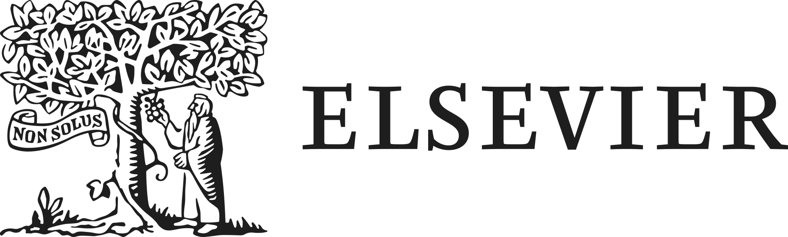

A repeatable workflow for getting consistent, on-brand HTML and PowerPoint out of Claude. Set it up once in your own Claude instance and you can reproduce these results. The color and type reference is at the bottom.
Claude does not have the licensed brand fonts by default, and a fresh chat starts with no memory of them. Without a small, repeatable setup, branded output drifts: the type quietly falls back to Georgia and Arial, and colors wander off the palette. The steps below close that gap so every branded build lands the same way.
This is the trap. The brand's fallback fonts guidance says the fallbacks are "intended only to maintain visual consistency when the primary typefaces are unavailable," and that they exist because "not all users may have access to the primary fonts."
The standard typefaces are Tiempos Text and National 2. Georgia and Arial appear only when the real fonts are missing. The whole point of this workflow is to make the real fonts available to Claude, then use them.
Paste the brief further down this page into your Claude project's custom instructions. That way every chat in the project starts already knowing the palette, the type rules, the accessibility limits, and the requirement to use the real fonts. If you do not use projects, paste it at the top of the chat before you ask for anything.
Download the brand pack, unzip it, and upload the contents into your chat before you ask for anything branded. It holds the brand screenshots, the web font files, and the official logos, so Claude can see the standards rather than take your word for them. Claude cannot keep these between sessions, so this is a per session step.
On the fonts: Tiempos Text and National 2 are the standard typefaces. Georgia and Arial are Microsoft availability fallbacks only, used when the real fonts are not installed. Uploading the real files is what stops Claude from quietly shipping the fallback.
Ask Claude to confirm the required font files are present in the chat before it builds. If they are missing, it should stop and ask you to upload them, not quietly ship Georgia or Arial. The brief instructs it to do exactly this, but it is worth a glance.
Request the output with the brand applied, then ask Claude to check its own work: WCAG AA contrast on every text and background pair, all the fonts actually referenced or embedded, and the color rules held, orange as a sparing accent, Action Blue for interactive only, Ivory for lines only. Verifying is quick and catches the drift before it reaches anyone.
One set of instructions covers both channels. Give Claude the files from the pack, say which channel you are building for, and it handles the rest.
/fonts folder and wires them up with @font-face using relative paths.One thing that looks like a bug and is not: a single HTML file opened on its own shows the fallback fonts, because the fonts folder is not sitting next to it. Once it is hosted, the real type loads.
The official logos are in the pack, so there is no reason to improvise one. Upload the file you need along with the fonts and screenshots.
Select all of the box below and paste it into your Claude project's custom instructions. It encodes the palette, type, accessibility, and font handling, so every branded request starts from the same place.
Brand: Elsevier. Apply these standards to any branded output. FONTS (the standard) Tiempos Text (serif) for headlines and high impact text, used sparingly. National 2 (sans serif) for body, UI, and long text. Georgia and Arial are availability fallbacks only, used when the primary fonts are not installed. The licensed font files are not built in, so I will upload them each session: - For HTML: the six woff2 files. Put them in a /fonts folder, reference with @font-face and relative paths, family names exactly "Tiempos Text" and "National 2", fallback stack Georgia and Arial only. - For PowerPoint: the .ttf or .otf files. Repoint theme fonts to Tiempos Text (headings) and National 2 (body), and embed the fonts in the file. Before producing any branded output, confirm the required font files are present in this chat. If they are missing, stop and ask me to upload them. Never silently ship Georgia or Arial as the real typeface. COLORS (official hex, use only these) Vital Orange #FF551D: sparing accent only, never body text or large fills. Graphite #1E1E1E: foundation and text. White #FFFFFF: foundation. Ink #544946: secondary text and surfaces. Sand #EEE7D7: secondary surface. Paper #F7F4EF: page background. Action Blue #2354FF: interactive only (links, buttons, focus rings). Digital only. Ivory #E1DFDB: lines and dividers only. Digital only. TYPE RULES About negative 2 percent letter spacing. Sentence case for nearly all text. No ending period on headlines or taglines. ACCESSIBILITY All text meets WCAG AA contrast against its background. Vital Orange on white only for large text, about 24px or 18.66px bold. Small text never sits directly on orange; place it in a white box. Text on an orange background is white. Focus rings use Action Blue. LOGO Use the official logo files from the brand pack. Primary lockup for horizontal space, stacked for square or vertical, wordmark alone for tight spaces. Graphite or vital orange on light backgrounds, white on dark or orange. SVG on screen, PNG for PowerPoint. Do not recolor, stretch, redraw, or crop the mark, and keep clear space around it. VERIFY BEFORE DELIVERY Confirm fonts are present and referenced or embedded, check AA contrast on every text and background pair, and keep orange to an accent, Action Blue to interactive, and Ivory to lines.
/fonts with correct relative path depth. PowerPoint: fonts embedded.Use only these colors. Hex values are official.